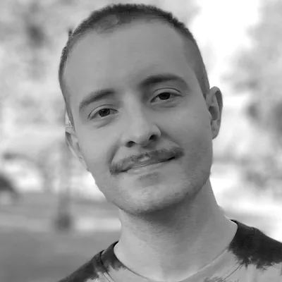

Fechas clave
- Envío de resúmenes Último día para mandar tu propuesta.
- Respuesta Te avisamos si tu propuesta fue aceptada.
- Liderazgos fest Encuentro presencial en la UNSAM.
De qué se trata
Los liderazgos nunca se fueron.
Un encuentro para pensar los liderazgos de hoy a partir del vínculo con quienes los siguen: las emociones, las narrativas y las imágenes que circulan entre ambos, el peso de las redes sociales y también el lugar del esoterismo y otros “saberes ocultos” en las decisiones políticas.
- Es presencial y se organiza en paneles y mesas de trabajo.
- Los paneles son por invitación. Las mesas se arman según los ejes y los formatos de participación.
- Los plazos y aranceles se van a informar en la próxima circular.
Leer la convocatoria completa
Los liderazgos nunca se fueron. Son un problema teórico y analítico que atraviesa la democracia y otros regímenes políticos. Las grandes transformaciones subjetivas, del mundo del trabajo y las económicas propias de la globalización nos colocan ante la necesidad de pensar el vínculo entre los liderazgos actuales y la condición subjetiva que los provoca y apoya.
Es relevante volver a pensar el vínculo e interacción social que instituye a líderes y lideresas de nuestra actualidad. Como así también, abordar la circulación y movilización de emociones, narrativas, imágenes y acciones que se establecen entre los liderazgos y sus adherentes. Volver a una mirada que analice la acción social, las emociones y la cultura visual para entender las jefaturas políticas actuales. Es relevante desentrañar cómo “juegan” los legados históricos y la coyuntura en la construcción, encuentro, vínculo emocional e imágenes de los liderazgos.
Para reflexionar sobre los liderazgos actuales invitamos a pensarlos teniendo en cuenta su singularidad epocal y el “corazón” del vínculo que los instituye. Para ello, será importante considerar las transformaciones sociales de la subjetividad, de la visualidad contemporánea y de la interacción política en momentos de globalización, ligada a nuevas vías de construcción a través de redes sociales y formatos comunicacionales alternativos. Pero, además de estas consideraciones, nos interesa rastrear, en el universo de las decisiones políticas de ciertos líderes, el lugar del esoterismo y de otros “saberes ocultos”.
Estamos pensando en una conversación y reflexión multinivel. Buscamos alentar el debate desde distintos registros: presentación de ponencias o pósteres, de podcasts y videopodcasts, y de storytelling para las redes sociales.
Cómo participar
Son tres pasos. Cada propuesta combina un eje y un formato.
-
Paso 1: Elegí un eje
El tema de tu propuesta, entre los cuatro ejes.
-
Paso 2: Elegí un formato
Ponencia o póster, podcast o videopodcast, o storytelling para redes. Ver formatos.
-
Paso 3: Mandá tu resumen
De 300 a 500 palabras, en .docx con Arial 12, hasta el 5 de marzo de 2027. Poné el eje en el asunto del correo.
Cuatro ejes temáticos
Cada eje es un espacio de conversación. Su número va en el asunto del correo.
- Espacio 1Liderazgos políticos actuales
- Espacio 2Liderazgos e imágenes
- Espacio 3Liderazgos intelectuales
- Espacio 4Liderazgos y ciencias ocultas
Tres formatos
Todos los ejes reciben propuestas en estos formatos. Tocá cada uno para ver los requisitos.
Formato A: Ponencia o póster
Hasta 2 personasInédito
- Autoría
- Individual o en coautoría, hasta dos personas.
- Requisito
- El trabajo tiene que ser inédito.
- Resumen
- De 300 a 500 palabras, en .docx con Arial 12. Incluí título, autoría, pertenencia institucional y correo electrónico.
Formato B: Podcast o videopodcast
Hasta 3 personasMáx. 15 minutos
- Autoría
- Individual o en coautoría, hasta tres personas.
- Duración
- Un solo podcast o videopodcast, de 15 minutos como máximo.
- Enfoque
- Propuestas inéditas sobre el liderazgo como concepto teórico o sobre casos de liderazgos actuales.
- Resumen
- De 300 a 500 palabras, en .docx con Arial 12. Contá el formato, la idea y el objetivo general, e incluí título, autoría, pertenencia institucional y correo.
- En el evento
- Lo presentás en persona en la mesa, contando qué hiciste y desde qué perspectiva teórica y analítica. No es un concurso
Formato C: Storytelling para redes
Autoría individualInédito
- Autoría
- Individual, una sola persona.
- Enfoque
- Piezas inéditas para redes sociales que analicen liderazgos actuales.
- Resumen
- De 300 a 500 palabras, en .docx con Arial 12. Contá el formato, la idea y el objetivo general, e incluí título, autoría, pertenencia institucional y correo.
- En el evento
- Lo presentás en persona en la mesa, contando qué hiciste y desde qué perspectiva teórica y analítica. No es un concurso
Armá el asunto de tu correo
Elegí eje y formato. El asunto se completa solo y lo podés copiar.
Comité organizador
-
Esteban De Gori
Pertenencia institucional
Bio breve: dos o tres líneas sobre su trabajo.
-
Carla Castro
Pertenencia institucional
Bio breve: dos o tres líneas sobre su trabajo.
-
Silvia Romagnolo
Pertenencia institucional
Bio breve: dos o tres líneas sobre su trabajo.
-

Federico Fort
Eidaes_UNSAM
Dr. en Ciencias Sociales. Especialista en estudios visuales, archivos e IA
-
Agustina Claveras
Pertenencia institucional
Bio breve: dos o tres líneas sobre su trabajo.
-
Juan Harriague
Pertenencia institucional
Bio breve: dos o tres líneas sobre su trabajo.
Consultas
¿Tenés dudas? Escribinos a:
proyectoliderazgosxxi@gmail.com